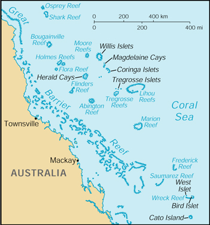

![[Country Flag of Coral Sea Islands]](../flags/cr-lgflag.jpg)
| Coral Sea Islands |
|
        |
 | |
| Geography |
Location: Oceania, islands in the Coral Sea, northeast of Australia
Geographic coordinates: 18 00 S, 152 00 E
Map references: Oceania
Area:
total:
less than 3 sq km
land:
less than 3 sq km
water:
0 sq km
note:
includes numerous small islands and reefs scattered over a sea area of about 1 million sq km, with the Willis Islets the most important
Area - comparative: NA
Land boundaries: 0 km
Coastline: 3,095 km
Maritime claims:
exclusive fishing zone:
200 nm
territorial sea:
3 nm
Climate: tropical
Terrain: sand and coral reefs and islands (or cays)
Elevation extremes:
lowest point:
Pacific Ocean 0 m
highest point:
unnamed location on Cato Island 6 m
Natural resources: NEGL
Land use:
arable land:
0%
permanent crops:
0%
permanent pastures:
0%
forests and woodland:
0%
other:
100% (mostly grass or scrub cover)
Irrigated land: 0 sq km (1993)
Natural hazards: occasional, tropical cyclones
Environment - current issues: no permanent fresh water resources
Geography - note: important nesting area for birds and turtles
| People |
Population:
no indigenous inhabitants
note:
there is a staff of three to four at the meteorological station (July 2000 est.)
| Government |
Country name:
conventional long form:
Coral Sea Islands Territory
conventional short form:
Coral Sea Islands
Data code: CR
Dependency status: territory of Australia; administered from Canberra by the Department of the Environment, Sport and Territories
Legal system: the laws of Australia, where applicable, apply
Executive branch: administered from Canberra by the Department of the Environment, Sport and Territories
Diplomatic representation in the US: none (territory of Australia)
Diplomatic representation from the US: none (territory of Australia)
Flag description: the flag of Australia is used
| Economy |
Economy - overview: no economic activity
| Communications |
Communications - note: there are automatic weather stations on many of the isles and reefs relaying data to the mainland
| Transportation |
Ports and harbors: none; offshore anchorage only
| Military |
Military - note: defense is the responsibility of Australia; visited regularly by the Royal Australian Navy; Australia has control over the activities of visitors
| Transnational Issues |
Disputes - international: none